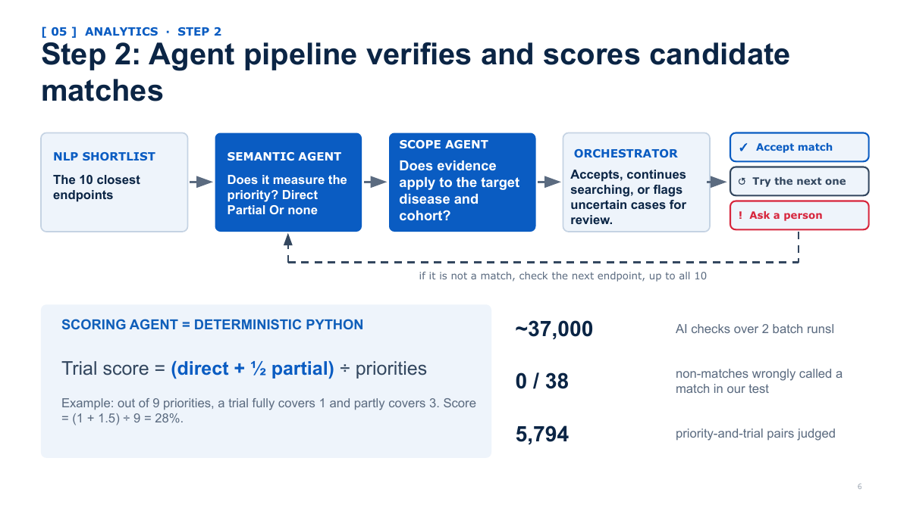

The problem
Clinical trials are evaluated through endpoints: the outcomes a study says it will measure. FDA Voice of the Patient reports capture what patients describe as meaningful symptoms, limitations, and treatment goals. The challenge is that patient priorities and trial endpoints are written differently, so keyword matching is not enough.

Approach
The project combined FDA patient-priority evidence with ClinicalTrials.gov API v2 data. The pipeline first used MiniLM embeddings and cosine similarity to retrieve up to 10 plausible endpoints for each patient priority. A constrained Semantic Match Agent then classified candidate relationships as direct, partial, or none. A Scope Agent checked disease/cohort applicability, while the final scoring remained deterministic in Python.
The design deliberately separated tasks where AI adds semantic judgment from tasks that should remain reproducible and auditable, including identifiers, joins, arithmetic, and final score calculation.
Validation
Retrieval validation recovered 15 of 16 confirmed direct matches at rank 1 and all 16 within the top 10. The final presentation reports 0 of 38 tested non-matches incorrectly classified as matches. The pipeline judged 5,794 patient-priority / trial pairs and scored 532 trials.
Result
The analysis found an average 25.7% alignment between scored clinical trials and patient priorities, with 65% of checks finding no registered endpoint matching the priority. The work is intended to evaluate what trials say they measure, not whether a drug works.
My contribution
My primary technical ownership was the Semantic Match Agent and its integration into the larger matching workflow. I also contributed to validation, pipeline reasoning, and translating the project methodology into a defensible analytical story.